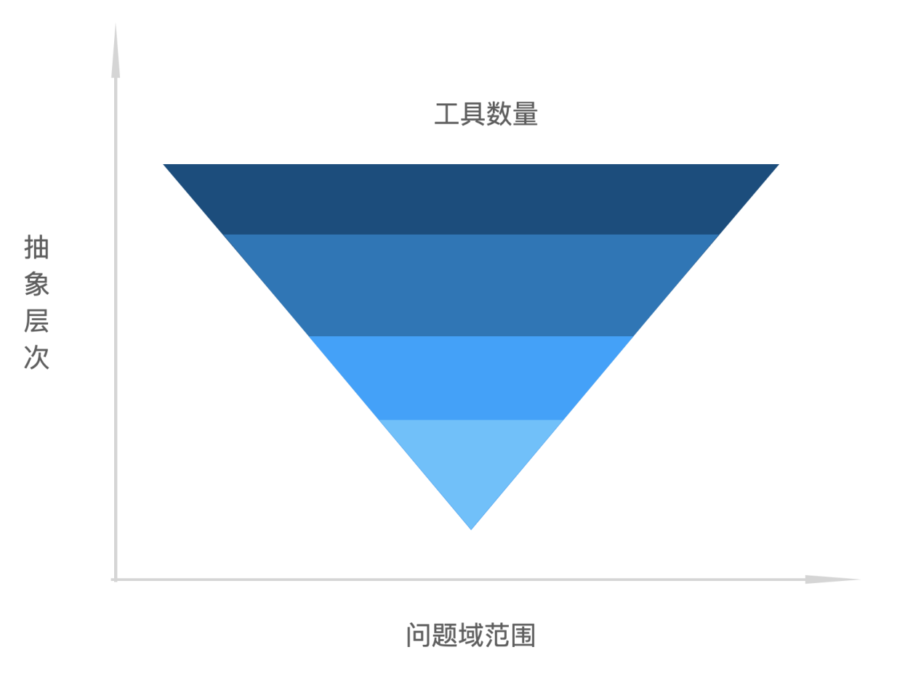

探寻Low Code
概览
low code（包含no code）一种通过提高抽象，隐藏程序细节的方式而设计出来的面向具体业务（领域）的平台工具，其目标一般是提效（原本角色做的更快更不容易出错）或者赋能（能做他们本做不到的事情）
在公司平台里有大大小小不同的low code平台，针对不同的业务域问题，设计了不同的组件，服务系统，接口，可视化界面等等，然后在自己的业务域里不断迭代着
但是这些low code系统在往往只根据具体问题，设计了具体功能，现有的技术进行代码堆砌，最终出来一个“平台” ，但背后的底层抽象却鲜少提及。
回溯历史
我们现在每天接触的JavaScript，java等，通通都是称为高级语言，在高级语言之下的是低级语言，如汇编，机器语言。现在已经不再写汇编了，我们已经可以通过更高抽象的高级语言来完成工作，因为这样更加高效也更准确。所以高级语言某种意义上也是一种low code。
但光有在JavaScript还不够，还不够快，通过语言的特性，上面诞生了各种各样的UI框架，vue，react。这些框架也通过更加高级的抽象，改变了前端工程师的开发方式。这也是一种low code。
在UI框架之上，还有更上层的抽象，如remix，next.js等，通过引入服务端的能力，让前端工程师的技术的纵深又深了一步而且学习的成本很低。
可以看到随着时代的发展，在编程界的工具都是不断提升的抽象，而且领域越来越细分

一个有意思的问题
问题：搭建系统的搭建系统（高阶搭建系统）是否有存在的意义？
辅助说明：只通过提供 library 的方式不能算高阶搭建系统
抽象程度：高阶搭建系统 > 搭建系统，
问题域范围：高阶搭建系统 > 单个搭建系统，但 高阶搭建系统 >= 子搭建系统的并集
Y